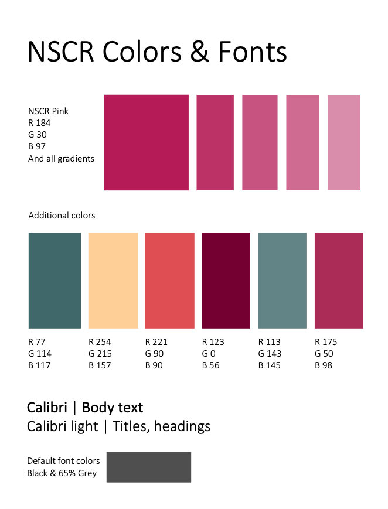
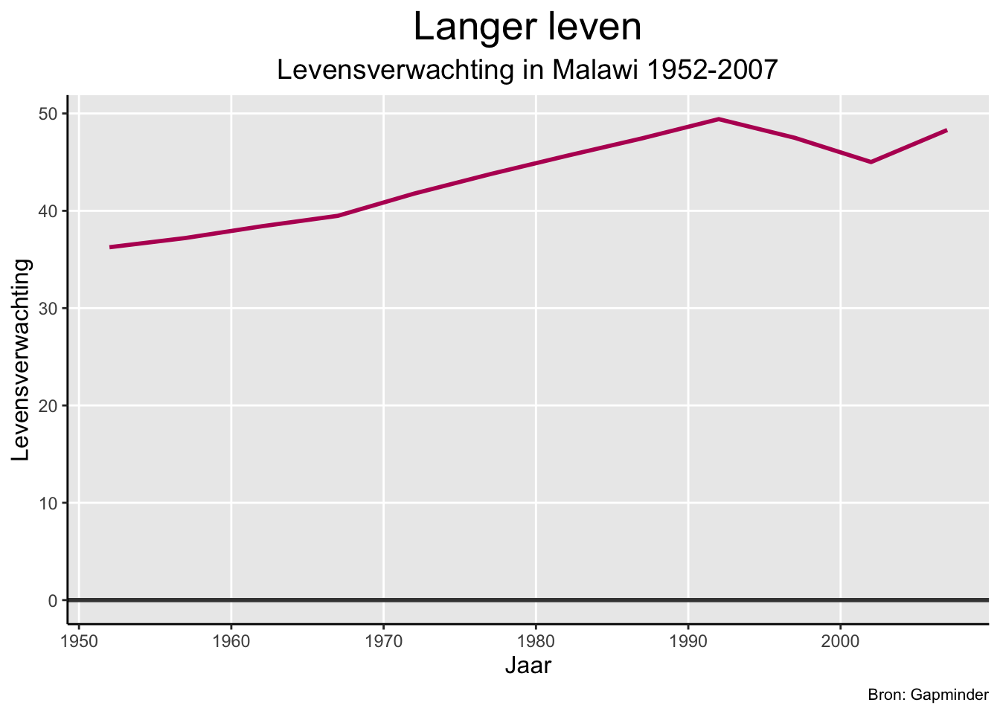
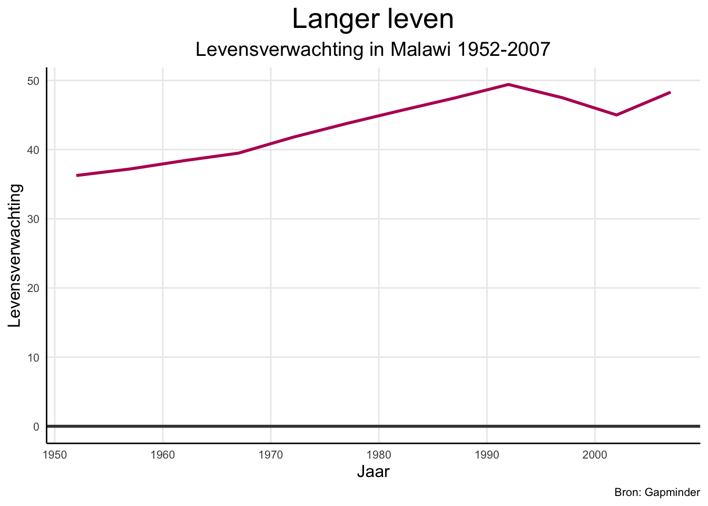
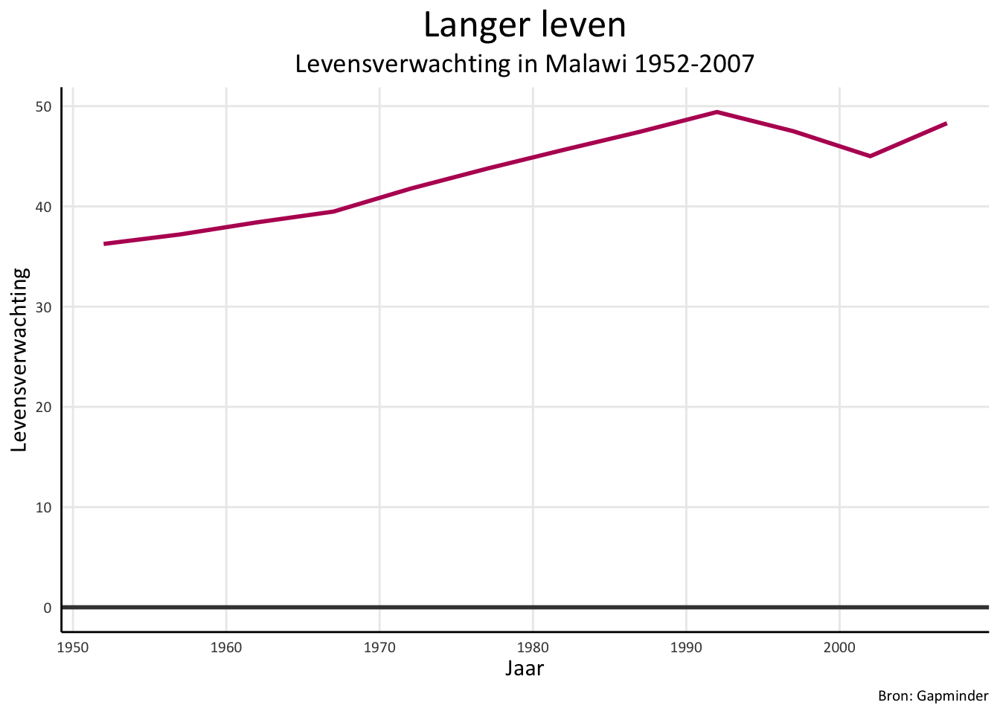
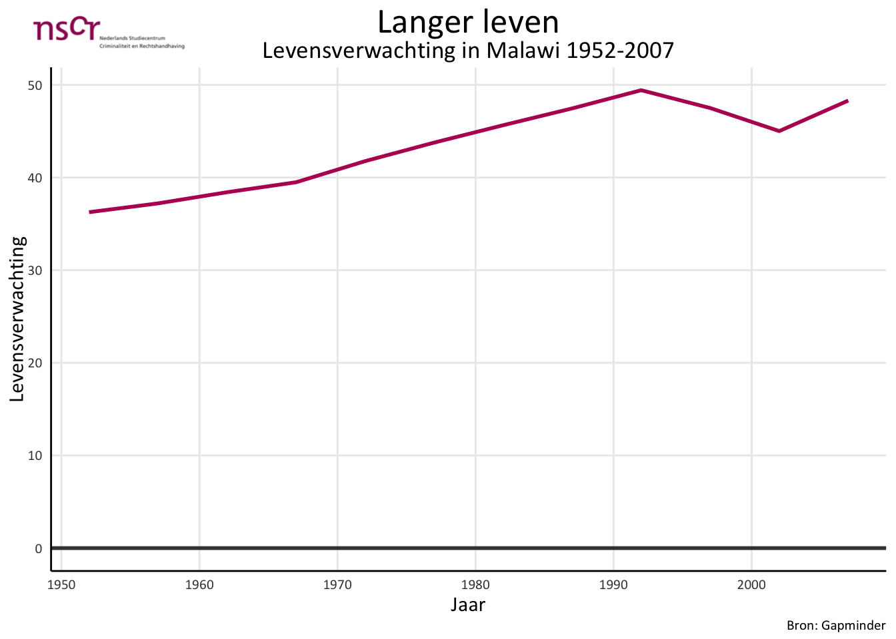
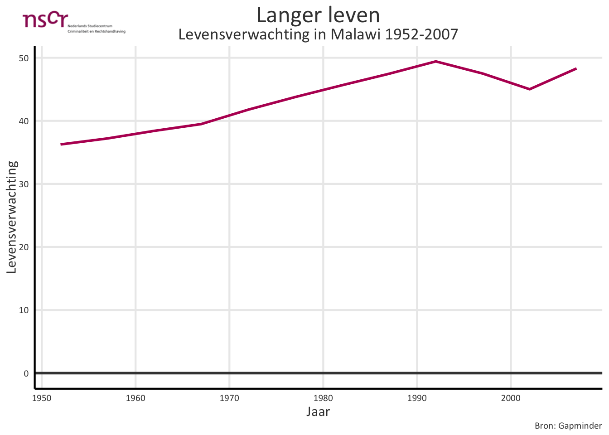

Hoe maak je de datavisualisatie van een bepaalde organisatie consistentie waarbij je rekening houdt met het kleurgebruik en de typografie waarvoor is gekozen en waarbij je ook soms het logo kunt gebruiken.
Communiseren
Auteur
Harrie Jonkman
Publicatiedatum
13 maart 2025
Introductie
De komende tijd zal ik enkele blogs schrijven over hoe je met R en Quarto wetenschappelijke producten een meer consistente uitstraling kunt geven. In dit blog gaat het over Consistentie in de datavisualisatie.
Media, onderzoeksinstellingen en overheden visualiseren data en informatie op allerlei manieren en gebruiken daarbij diverse programma’s en technologieën. Over de eisen waaraan de visualisaties moeten voldoen, denken ze steeds meer na. Men is zich ervan bewust dat heldere uitgangspunten positief bijdragen aan toegankelijkheid, consistentie en effectiviteit van de resultaten. Steeds meer vooraanstaande media-, onderzoeks- en overheidsinstellingen publiceren daarom hun eigen stijlgidsen waarmee ze uitgangspunten van hun datavisualisatie formuleren (zie deze mooie voorbeelden: (HIV/AIDS 2021; Institute 2024; citistat 2022; B. B. C. 2019).
In deze blogbijdrage worden allereerst kort enkele richtlijnen en principes voor datavisualisatie gepresenteerd. Die beschrijven wat algemeen en voor elke organisatie van belang is, ze geven houvast en bieden ruimte voor creativiteit. Het helpt bij het opzetten van een consistente wijze van werken door na te denken over typografie, kleur en de inzet van het logo.
Daarna laat ik zien wat dit voor een organisatie betekent en het kan aansluiten bij werwijze.
Enkele richtlijnen en principes
Typografie
De kans is groot dat de organisatie al standaarden heeft voor het lettertype waarmee gewerkt wordt. Het lettertype voor datavisualisaties wordt daarop afgestemd, dat kan hetzelfde of een bijpassend lettertype zijn. Hou daarbij in ieder geval de volgende zaken in het achterhoofd:
Leesbaarheid. Focus op leesbaarheid. Zoek een lettertype dat gemakkelijk te lezen is en dat zowel hoofdletters als kleine letters ondersteunt. Weet zeker dat je met verschillende gewichten (vet, schuin, normaal, licht) kunt werken en ook dat je met de cijfers goed kunt werken.
Toegankelijkheid. Zorg ervoor dat iedereen toegang heeft tot het lettertype en ze het kunnen gebruiken.
Afspraken. Maak afspraken over tekstkleur en -groottes, ook voor de datavisualisatie. Dat kan kan globaal, maar de afspraken moeten wel te volgen zijn en vastgelegd zijn in de documentatie. Het moet wel werken in de verschillende media die gebruikt worden.
Kleur
Kleur is belangrijk bij datavisualisatie. Hier kom je vier kleurvormen tegen: hoofdkleur, categoriale kleuren, opeenvolgende kleuren en divergerende kleuren.
Hoofdkleur: Kijk of de organisatie een bepaalde hoofdkleur (of bv. twee hoofdkleuren) heeft.
Categoriale kleuren: Wanneer je kleur gebruikt om categorieën te maken, is het doel eenvoudig: groepen van elkaar onderscheiden. Je maakt enkele kleuren aan, bv. vier, vijf, of zes kleuren (kan meer, maar misschien niet te veel). Er zijn hier drie belangrijke doelen:
Kleuren zijn apart en verschillend.
Kleuren zijn waarde-neutraal.
Kleuren passen aan bij de organisatie. Bv. door de kleuren die al gebruikt worden of het logo.
De kleuren passen bij elkaar en vormen een geheel.
Divergerende kleuren: Divergerende kleuren worden gebruikt om de afstand tussen (vaak) twee of drie groepen duidelijk te maken. De kleuren zijn afzonderlijk en verschillend en het verschil tussen de groepen is duidelijk.
Opeenvolgende kleuren: Wanneer kleur wordt gebruikt om een numerieke waarde of hoeveelheid weer te geven, gebruik je een opeenvolgende kleurenschaal. Het eenvoudigste voorbeeld is iets dat aan de ene kant wit begint en aan de andere kant donkerder wordt tot het zwart is.
Schalen veranderen op een uniforme manier en dat betekent dat het verschil tussen 1 en 2 hetzelfde is als het verschil tussen 2 en 3.
Ook de opeeenvolgende kleuren passen aan bij de organisatie.
Ook hier vormt het palette een geheel.
Waar je verder op moet letten: Naast de kleuren die gegevens coderen, moet je een meer neutrale set kleuren instellen voor achtergronden, tekst, assen en andere markeringen. Dit zijn vaak zwart- en grijstinten, maar ze kunnen getint worden om beter bij je merk te passen.
Als je organisatie een merkgids of ontwerpsysteem heeft, overweeg dan manieren om deze te integreren (en aan te vullen) met richtlijnen voor datavisualisatie.
Logo
Zorg ervoor dat het logo (eventueel) kan worden gebruikt bij het maken van datavisualisatie. Het kleurgebruik past hier goed bij aan.
Praktijk
Ik heb contact opgenomen met Wim Bernasco van het NSCR met wie ik eerder voor enige tijd in een R-werkgroep zat waarvoor ikzelf de website gemaakt heb nsc_R workgroup. Ik vroeg hem of er op zijn instituut afspraken zijn over typografie en het kleurgebruik. Dit stuurde hij mij per omgaande onder anderen op dat ik als uitgangspunt heb gebruikt:

Het kleurgebruik
Ik vroeg ook of hij mij het logo wilde sturen. Hij stuurde mij enkele opties toe en onderstaand logo heb ik steeds gebruikt:
Het logo
Ok, installeer en open allereerst de volgende pakketten:
Ik zie dat ze bij het NSCR met Calibri als font werken. Vervolgens heb ik gekeken of dit in mijn eigen fontbook staat. Dat was niet het geval en daarom heb ik het gedownload via google-fonts. Om met R te zien of het nu wel op mijn computer staat, kun je het volgende doen:
library(ggplot2)ggplot(NULL, aes(0, 0)) +geom_text(aes(label ="Calibri"),size =18, family ="Calibri" )
Vervolgens heb ik gekeken naar de kleuren, dat zijn deze:
NSCR kleuren en lettertype
Ik heb de NSCR-kleuren met hun RGB-codes in een RGB-Hex converter gevonden
Dit is de hoofdkleur NSCR pink #B81E6 en de andere kleuren.
# NSCR hoofdkleurrgb_to_hex(c(184, 30, 97))
[1] "#B81E61"
## Andere kleurenrgb_to_hex(c(77, 114, 117))
[1] "#4D7275"
rgb_to_hex(c(254, 215, 157))
[1] "#FED79D"
rgb_to_hex(c(221, 90, 90))
[1] "#DD5A5A"
rgb_to_hex(c(123, 0, 56))
[1] "#7B0038"
rgb_to_hex(c(113, 143, 145))
[1] "#718F91"
rgb_to_hex(c(175, 50, 98))
[1] "#AF3262"
# Lettertype kleurrgb_to_hex(c(65, 65, 65))
[1] "#414141"
Ik heb ook naar de gradients van de hoofdkleur #B81E61 gekeken en deze in de app geplaatst. Dan krijg ik dit kleurenpalette:#B81E61 #C64A80 #D478A0 #E2A5BF #F0D2DF
Dit zijn de aanvullende NSCR-kleuren #4D7275, #FED79D, #DD5A5A, #7B0038, #718F91, #AF3262
En als ik het goed heb gebruiken ze deze kleur voor het font: #414141
Nu gaan we de algemene, opeenvolgende, divergerende, categoriale en tekstkleuren vastzetten.
Vervolgens heb ik gekeken of ik een eenvoudige basisgrafiek zou kunnen maken. Hoe kunnen we daar de NSCR-kleuren, hun lettertype en logo aan toevoegen en, vooral, hoe kunnen we uiteindelijk dit proces automatiseren. Ik laat eerst de belangrijke stappen zien. Daar gebruik ik het bekende gapminder data-bestand voor en grafieken die de BBC ook met dat bestand hebben gemaakt (B. B. C. 2019).
Eerst eenvoudige lijngrafiek met de kleur van het NSCR
#Data binnenhalendf <- gapminder %>%filter(country =="Malawi") #MGrafiek makenplot <-ggplot(df, aes(x = year, y = lifeExp)) +geom_line(colour = NSCR_main, size =1) +geom_hline(yintercept =0, size =1, colour=NSCR_font) +labs(title="Langer leven",subtitle ="Levensverwachting in Malawi 1952-2007",caption ='Bron: Gapminder',x ='Jaar',y ='Levensverwachting') +# centeer de kop en subkop en pas de grootte van de tekst aantheme(plot.title =element_text(size =20, hjust =0.5), plot.subtitle =element_text(size =14, hjust =0.5),plot.caption =element_text(size =8),axis.title =element_text(size =12)) +# aanpassen rasterlijnentheme(axis.line =element_line(color='black'),plot.background =element_blank(),panel.grid.minor =element_blank(),panel.border =element_blank())plot

Thema toevoegen voor consistentie
#Data binnenhalendf <- gapminder %>%filter(country =="Malawi") #Grafiek makenplot <-ggplot(df, aes(x = year, y = lifeExp)) +theme_minimal() +geom_line(colour = NSCR_main, size =1) +geom_hline(yintercept =0, size =1, colour=NSCR_font) +labs(title="Langer leven",subtitle ="Levensverwachting in Malawi 1952-2007",caption ='Bron: Gapminder',x ='Jaar',y ='Levensverwachting') +# centeer de kop en subkop en pas de grootte van de tekst aantheme(plot.title =element_text(size =20, hjust =0.5), plot.subtitle =element_text(size =14, hjust =0.5),plot.caption =element_text(size =8),axis.title =element_text(size =12),axis.text =element_text(size =8)) +# aanpassen rasterlijnetheme(axis.line =element_line(color='black'),plot.background =element_blank(),panel.grid.minor =element_blank(),panel.border =element_blank())plot

Lettertype Calibri toevoegen
#Data for chart from gapminder packagedf <- gapminder %>%filter(country =="Malawi") #Make plotplot <-ggplot(df, aes(x = year, y = lifeExp)) +theme_minimal() +geom_line(colour = NSCR_main, size =1) +geom_hline(yintercept =0, size =1, colour=NSCR_font) +labs(title="Langer leven",subtitle ="Levensverwachting in Malawi 1952-2007",caption ='Bron: Gapminder',x ='Jaar',y ='Levensverwachting') +# plaats de titels, de titels op de assen en titels van de legenda in dezelfde kleur. theme(plot.title =element_text(size =20, hjust =0.5), plot.subtitle =element_text(size =14, hjust =0.5),plot.caption =element_text(size =8),axis.title =element_text(size =12),axis.text =element_text(size =8, color = NSCR_font),# tekst elementen naar Calibri zetten. text =element_text(family ="Calibri")) +# aanpassen rasterlijnentheme(axis.line =element_line(color='black'),plot.background =element_blank(),panel.grid.minor =element_blank(),panel.border =element_blank())plot

Nu het logo toevoegen
library(cowplot)library(magick)# Logo lokaal opslaannscr_logo <-image_read('1a_NSCR_LogoBasis_RGB.jpg')#Data binnenhalendf <- gapminder %>%filter(country =="Malawi") #Grafiek makenplot <-ggplot(df, aes(x = year, y = lifeExp)) +theme_minimal() +geom_line(colour = NSCR_main, size =1) +geom_hline(yintercept =0, size =1, colour=NSCR_font) +labs(title="Langer leven",subtitle ="Levensverwachting in Malawi 1952-2007",caption ='Bron: Gapminder',x ='Jaar',y ='Levensverwachting') +# plaats de titels, de titels op de assen en titels van de legenda in dezelfde kleur. theme(plot.title =element_text(size =20, hjust =0.5), plot.subtitle =element_text(size =14, hjust =0.5),plot.caption =element_text(size =8),axis.title =element_text(size =12),axis.text =element_text(size =8, color = NSCR_font),# tekst elementen naar Calibri zetten. text =element_text(family ="Calibri")) +# aanpassen rasterlijnentheme(axis.line =element_line(color='black'),plot.background =element_blank(),panel.grid.minor =element_blank(),panel.border =element_blank())line_plot<-ggdraw() +# specificeer positie logo draw_image(nscr_logo, x =-0.375, y =0.45 , scale =0.2) +draw_plot(plot)line_plot

6a. Automatiseren met logo
In een apart bestand definieer je de eisen waaraan de visualisatie moet voldoen. Dan hoef je die eisen niet steeds opnieuw aan de programmering toe te voegen en kan iedereen deze gebruiken. Dat staat in het document nscr.R en we noemen het theme_nscr. Als je het logo wilt gebruiken moet je dat toevoegen.
source('nscr.R')
Loading required package: sysfonts
Loading required package: showtextdb
#Data binnenhalendf <- gapminder %>%filter(country =="Malawi") #Grafiek makenplot <-ggplot(df, aes(x = year, y = lifeExp)) +geom_line(colour = NSCR_main, size =1) +geom_hline(yintercept =0, size =1, colour=NSCR_font) +labs(title="Langer leven",subtitle ="Levensverwachting in Malawi 1952-2007",caption ='Bron: Gapminder',x ='Jaar',y ='Levensverwachting') +theme_nscr# logo toevoegenline_plot <-ggdraw() +# these specify the position on the graphdraw_image(nscr_logo, x =-0.375, y =0.45 , scale =0.2) +draw_plot(plot)line_plot

6b. Automatiseren zonder logo Alles hetzelfde als hierboven maar nu zonder logo.